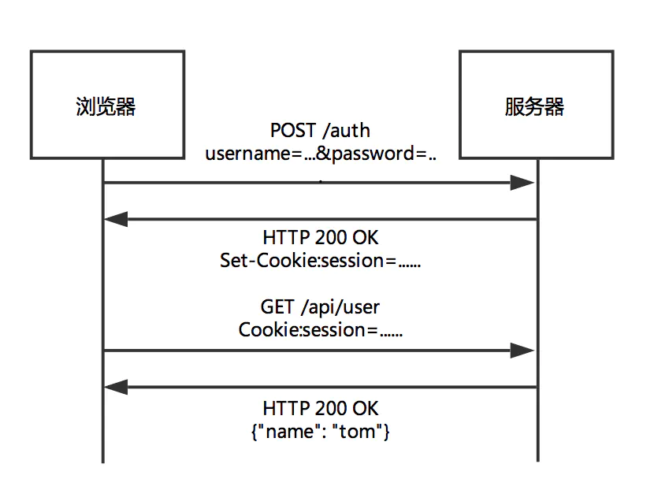
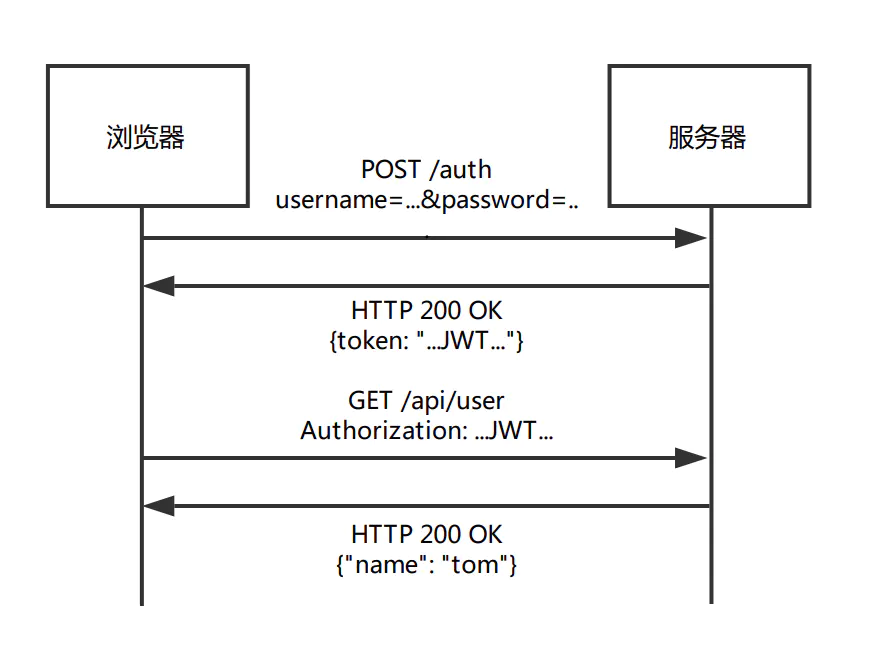

HTTP协议
Http是一种网络协议，也是互联网上应用最为广泛的一种，http也叫超文本传输协议，所有的html文件都是遵循这个标准进行传输的。 HTTP的出现是为了提供一种发布和接收HTML页面的办法。
以下是 HTTP 请求/响应的步骤：
客户端连接到Web服务器 一个HTTP客户端，通常是浏览器，与Web服务器的HTTP端口（默认为80）建立一个TCP套接字连接。例如，http://www.luffycity.com。
发送HTTP请求 通过TCP套接字，客户端向Web服务器发送一个文本的请求报文，一个请求报文由请求行、请求头部、空行和请求数据4部分组成。
服务器接受请求并返回HTTP响应 Web服务器解析请求，定位请求资源。服务器将资源复本写到TCP套接字，由客户端读取。一个响应由状态行、响应头部、空行和响应数据4部分组成。
释放连接TCP连接 若connection 模式为close，则服务器主动关闭TCP连接，客户端被动关闭连接，释放TCP连接;若connection 模式为keepalive，则该连接会保持一段时间，在该时间内可以继续接收请求;
客户端浏览器解析HTML内容 客户端浏览器首先解析状态行，查看表明请求是否成功的状态代码。然后解析每一个响应头，响应头告知以下为若干字节的HTML文档和文档的字符集。客户端浏览器读取响应数据HTML，根据HTML的语法对其进行格式化，并在浏览器窗口中显示。
例如：在浏览器地址栏键入URL，按下回车之后会经历以下流程：
- 浏览器向 DNS 服务器请求解析该 URL 中的域名所对应的 IP 地址;
- 解析出 IP 地址后，根据该 IP 地址和默认端口 80，和服务器建立TCP连接;
- 浏览器发出读取文件(URL 中域名后面部分对应的文件)的HTTP 请求，该请求报文作为 TCP 三次握手的第三个报文的数据发送给服务器;
- 服务器对浏览器请求作出响应，并把对应的 html 文本发送给浏览器;
- 释放 TCP连接;
- 浏览器将该 html 文本并显示内容;
版本历史
- HTTP/0.9：只接受一种请求方法，没有固定的版本号，不支持请求头
- HTTP/1.0：第一个在通讯中指定版本号的HTTP协议版本，至今仍在使用
- HTTP/1.1：持续链接被默认采用，并能很好的配合代理服务器
- HTTP/2.0: 在不改动HTTP语义、方法、状态码、URI及首部字段的情况下，大幅度提高了web性能。
HTTP1.x 和 HTTP2.0 对比
HTTP1.x有以下几个主要缺点：
- HTTP/1.0一次只允许在一个TCP连接上发起一个请求，HTTP/1.1使用的流水线技术也只能部分处理请求并发，仍然会存在队列头阻塞问题，因此客户端在需要发起多次请求时，通常会采用建立多连接来减少延迟。
- 单向请求，只能由客户端发起。
- 请求报文与响应报文首部信息冗余量大。
- 数据未压缩，导致数据的传输量大。
HTTP2.0:
- 新的二进制格式（Binary Format），HTTP1.x的解析是基于文本。基于文本协议的格式解析存在天然缺陷，文本的表现形式有多样性，要做到健壮性考虑的场景必然很多，二进制则不同，只认0和1的组合。基于这种考虑HTTP2.0的协议解析决定采用二进制格式，实现方便且健壮。
- 多路复用（MultiPlexing），即连接共享，即每一个request都是是用作连接共享机制的。一个request对应一个id，这样一个连接上可以有多个request，每个连接的request可以随机的混杂在一起，接收方可以根据request的 id将request再归属到各自不同的服务端请求里面。
- header压缩，HTTP1.x的header带有大量信息，而且每次都要重复发送，HTTP2.0使用encoder来减少需要传输的header大小，通讯双方各自cache一份header fields表，既避免了重复header的传输，又减小了需要传输的大小。
- 服务端推送（server push），同SPDY一样，HTTP2.0也具有server push功能。例如我的网页有一个sytle.css的请求，在客户端收到sytle.css数据的同时，服务端会将sytle.js的文件推送给客户端，当客户端再次尝试获取sytle.js时就可以直接从缓存中获取到，不用再发请求了。
HTTP消息结构和HTTP状态码
HTTP消息结构: https://www.cnblogs.com/an-wen/p/11180076.html
HTTP状态码:
- 200 – 请求成功
- 301 – 资源被永久转移到其它URL
- 404 – 请求的资源不存在
- 500 – 内部服务器错误
HTTP状态码分为5种类型：
- 信息，服务器收到请求，需要请求者继续执行操作
- 成功，操作被成功接收并处理
- 重定向，需要进一步的操作以完成请求
- 客户端错误，请求包含语法错误或无法完成请求
- 服务器错误，服务器在处理请求过程中发生了错误
Token 和 Cookie
http是一个无状态协议
Cookie 和 Session
验证流程（如下图）：
- 用户输入登陆凭据；
- 服务器验证凭据是否正确，并创建会话，然后把会话数据存储在数据库中；
- 具有会话id的cookie被放置在用户浏览器中；
- 在后续请求中，服务器会根据数据库验证会话id，如果验证通过，则继续处理；
- 一旦用户登出，服务端和客户端同时销毁该会话。

特点：
- 首先，客户端会发送一个http请求到服务器端。
- 服务器端接受客户端请求后，建立一个session，并发送一个http响应到客户端，这个响应头，其中就包含Set-Cookie头部。该头部包含了sessionId。Set-Cookie格式如下，具体请看Cookie详解
- Set-Cookie: value[; expires=date][; domain=domain][; path=path][; secure]
- 在客户端发起的第二次请求，假如服务器给了set-Cookie，浏览器会自动在请求头中添加cookie
- 服务器接收请求，分解cookie，验证信息，核对成功后返回response给客户端
Token
流程（如下图）：
- 用户输入登陆凭据；
- 服务器验证凭据是否正确，然后返回一个经过签名的token；
- 客户端负责存储token，可以存在local storage，或者cookie中；
- 对服务器的请求带上这个token；
- 服务器对JWT进行解码，如果token有效，则处理该请求；
- 一旦用户登出，客户端销毁token。

特点：
token 也称作令牌，由uid+time+sign[+固定参数]，生成一般采用JWT规则，JWT包括三个部分：头部、载荷和签名，这三个部分通过.连接起来。签名采用的是HMAC SHA256 算法
HMACSHA256(base64UrlEncode(header) + "." +base64UrlEncode(payload),secret)SHA是散列算法，并非加密算法，也当然也不存在解密的问题。正确的说法应该叫“破解”。所谓破解就是找到任意一个源数据，能够生成相同的目标数据，即“碰撞”。目前的计算能力下，SHA256基本上是不可破解的，即找不到（或概率极小）“碰撞”结果。
token 的认证方式类似于临时的证书签名, 并且是一种服务端无状态的认证方式, 非常适合于 REST API 的场景. 所谓无状态就是服务端并不会保存身份认证相关的数据。
- uid: 用户唯一身份标识
- time: 当前时间的时间戳
- sign: 签名, 使用 hash/encrypt 压缩成定长的十六进制字符串，以防止第三方恶意拼接 固定参数(可选): 将一些常用的固定参数加入到 token 中是为了避免重复查库 存放
- token在客户端一般存放于localStorage，cookie，或sessionStorage中。在服务器一般存于数据库中
Toekn 优点
- 无状态
基于token的验证是无状态的，这也许是它相对cookie来说最大的优点。后端服务不需要记录token。每个令牌都是独立的，包括检查其有效性所需的所有数据，并通过声明传达用户信息。
服务器唯一的工作就是在成功的登陆请求上签署token，并验证传入的token是否有效。
防跨站请求伪造（CSRF）
多站点使用
cookie绑定到单个域。foo.com域产生的cookie无法被bar.com域读取。使用token就没有这样的问题。这对于需要向多个服务获取授权的单页面应用程序尤其有用。
使用token，使得用从myapp.com获取的授权向myservice1.com和myservice2.com获取服务成为可能。
- 支持移动平台
好的API可以同时支持浏览器，iOS和Android等移动平台。然而，在移动平台上，cookie是不被支持的。
- 性能
一次网络往返时间（通过数据库查询session信息）总比做一次HMACSHA256计算的Token验证和解析要费时得多。
Web中HTTP的API
ajax
- 是XMLHTTPRequest的一个实例
- 只有当状态为200或者304时才会请求成功
- 格式零散，容易出现回调地狱的问题
- readyState的状态：
| 值 | 状态 | 描述 |
|---|---|---|
| 0 | UNSENT (初始状态，未打开) | 此时xhr对象被成功构造，open()方法还未被调用 |
| 1 | OPENED (已打开，未发送) | open()方法已被成功调用，send()方法还未被调用。注意：只有xhr处于OPENED状态，才能调用xhr.setRequestHeader()和xhr.send(),否则会报错 |
| 2 | HEADERS_RECEIVED(已获取响应头) | send()方法已经被调用, 响应头和响应状态已经返回 |
| 3 | LOADING (正在下载响应体) | 响应体(response entity body)正在下载中，此状态下通过xhr.response可能已经有了响应数据 |
| 4 | DONE (整个数据传输过程结束) | 整个数据传输过程结束，不管本次请求是成功还是失败 |
fetch
- fetch是基于promise实现的，也可以结合async/await
- fetch请求默认是不带cookie的，需要设置fetch（URL，{credentials: 'include'})。 Credentials有三种参数：same-origin，include，*
- 服务器返回400 500 状态码时并不会reject，只有网络出错导致请求不能完成时，fetch才会被reject
- 所有版本的 IE 均不支持原生 Fetch
- fetch是widow的一个方法
相关请求代码封装
// 1、fetch()返回的promise将不会拒绝http的错误状态，即使响应是一个HTTP 404或者500
// 2、在默认情况下 fetch不会接受或者发送cookies
export default async(url = '', data = {}, type = 'GET', method = 'fetch') => {
type = type.toUpperCase();
url = baseUrl + url;
if (type == 'GET') {
let dataStr = ''; //数据拼接字符串
Object.keys(data).forEach(key => {
dataStr += key + '=' + data[key] + '&';
})
if (dataStr !== '') {
dataStr = dataStr.substr(0, dataStr.lastIndexOf('&'));
url = url + '?' + dataStr;
}
}
if (window.fetch && method == 'fetch') {
let requestConfig = {
credentials: 'include',//为了在当前域名内自动发送 cookie ， 必须提供这个选项
method: type,
headers: {
'Accept': 'application/json',
'Content-Type': 'application/json'
},
mode: "cors",//请求的模式
cache: "force-cache"
}
if (type == 'POST') {
Object.defineProperty(requestConfig, 'body', {
value: JSON.stringify(data)
})
}
try {
const response = await fetch(url, requestConfig);
const responseJson = await response.json();
return responseJson
} catch (error) {
throw new Error(error)
}
} else {
return new Promise((resolve, reject) => {
let requestObj;
if (window.XMLHttpRequest) {
requestObj = new XMLHttpRequest();
} else {
requestObj = new ActiveXObject;
}
let sendData = '';
if (type == 'POST') {
sendData = JSON.stringify(data);
}
requestObj.open(type, url, true);
requestObj.setRequestHeader("Content-type", "application/x-www-form-urlencoded");
requestObj.send(sendData);
requestObj.onreadystatechange = () => {
if (requestObj.readyState == 4) {
if (requestObj.status == 200) {
let obj = requestObj.response
if (typeof obj !== 'object') {
obj = JSON.parse(obj);
}
resolve(obj)
} else {
reject(requestObj)
}
}
}
})
}
}
Fiddler的使用
相关软件
配置抓取https的包
- 浏览器设置里面导入证书即可
抓包
- Statistics：数据统计面板。性能分析。
- Inspectors ：对抓到的请求进行解包，查看具体内容。
- AutoResponder：文件代理【常用】。例如，将一个需要服务端返回的文件，使用本地文件做代理。
- Composer：前后端接口连调，伪造请求【常用】。实现不写任何js代码的情况下实现与服务端的接口调式。
- Timeline: 性能分析。对选择多个请求有意义。作用类似HttpWatch.